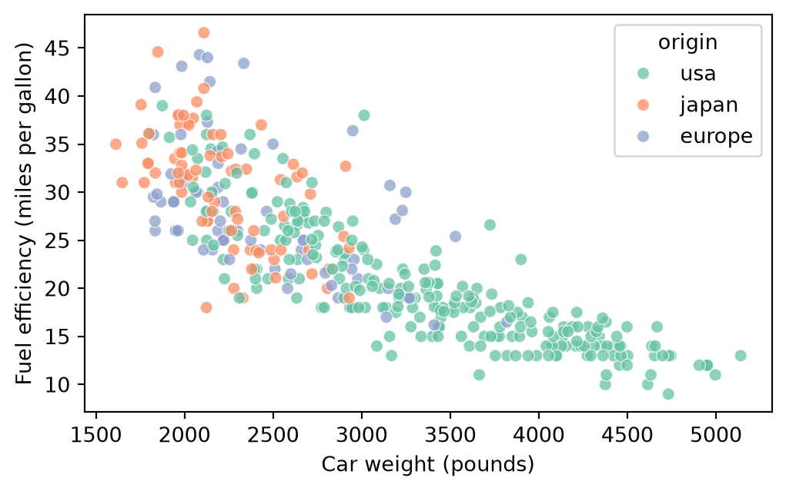
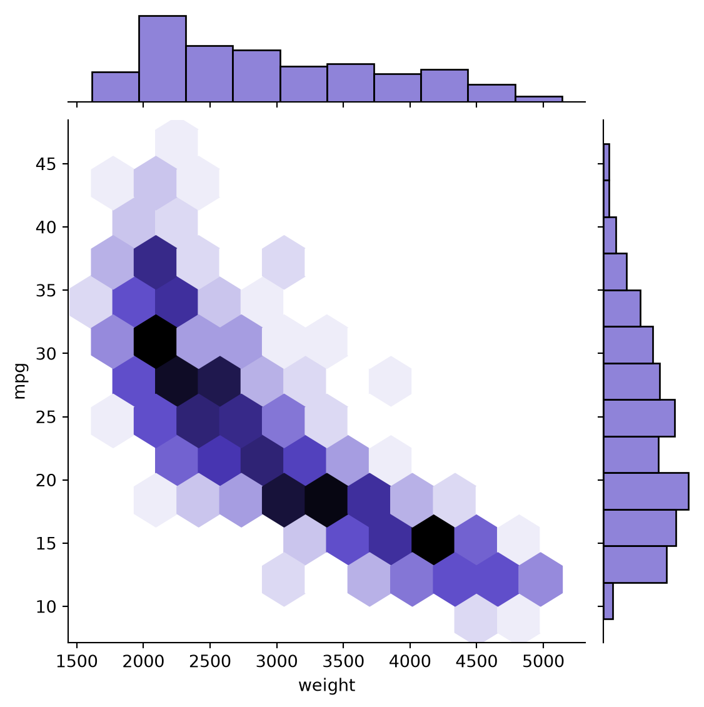

import pandas as pd
import numpy as np
import seaborn as sns
import matplotlib.pyplot as plt
df = sns.load_dataset("mpg")
df = df.dropna(subset=["weight", "mpg"])Correlation Analysis of Car Weight and Fuel Efficiency
Introduction
This project examines the relationship between car weight and fuel efficiency. The dataset contains 398 cars with recorded values for both variables. Our research question is: Is car weight correlated with fuel efficiency, measured in miles per gallon (mpg)?
Literature Review
This dataset is a slightly modified version of the dataset provided in the StatLib library. In line with the use by Ross Quinlan (1993) in predicting the attribute “mpg”, 8 of the original instances were removed because they had unknown values for the “mpg” attribute. The original dataset is available in the file “auto-mpg.data-original”.
“The data concerns city-cycle fuel consumption in miles per gallon, to be predicted in terms of 3 multivalued discrete and 5 continuous attributes.” (Quinlan, 1993)UCI Machine Learning Repository (n.d.).
Method
Given that we have two columns of continuous data(car weight measured in pounds and fuel efficiency measured in miles per gallon) we will evaluate this relationship using simple correalation analysis and also a scatterplot. These two methods are classic and traditional starting points when evaluating data like these.
Result
Results
corr_val = np.array(df[["weight", "mpg"]].corr())[0][1]
if corr_val > 0.8:
narrative = "a very strong positive correlation"
elif corr_val > 0.4:
narrative = "a moderate positive correlation"
elif corr_val > 0:
narrative = "a weak positive correlation"
elif corr_val > -0.4:
narrative = "a weak negative correlation"
elif corr_val > -0.8:
narrative = "a moderate negative correlation"
else:
narrative = "a very strong negative correlation"Using Pearson correlation, these data produce a correlation coefficient of -0.83174. Based on this result, the relationship is a very strong negative correlation.
fig, ax = plt.subplots(figsize=(6, 3.5))
sns.scatterplot(
data=df, x="weight", y="mpg",
hue="origin", palette="Set2",
alpha=0.75, ax=ax
)
ax.set_xlabel("Car weight (pounds)")
ax.set_ylabel("Fuel efficiency (miles per gallon)")
plt.show()
As shown in Figure 1, the scatterplot provides a visual check of the relationship between car weight and fuel efficiency.
Discussion
The correlation coefficient and scatterplot suggest that heavier cars tend to have lower fuel efficiency, measured in miles per gallon. This is an association, so the analysis alone does not show that weight causes the difference in mpg. Other vehicle characteristics, such as horsepower or model year, may also be related to fuel efficiency.
sns.jointplot(data=df, x="weight", y="mpg", kind="hex", color="#6A5ACD")
References
UCI Machine Learning Repository. n.d. Auto MPG. https://archive.ics.uci.edu/dataset/9/auto+mpg.